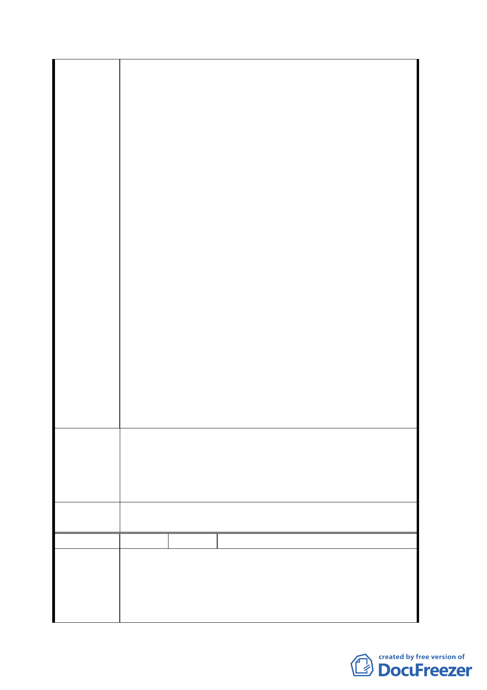

要，得依法徵收私有土地，但須在影響人民財產最
小之原則下為之，是台北市政府都發局於擬定計畫
時即應遵循上開原則，儘量將私人所有之土地與建
物排除系爭計畫之範圍外。
三、經查本人所有台北市萬華區貴陽街二段 1-4、
1-5、3-2、3-3、3-4 號等建物，早於日據時期即已
存在，且已經本人等辦竣建物保存登記，另有建物
所有權狀之合法建物，絕非一般佔用公地私自撘屋
之違章建築可比擬，而都發局擬定系爭計畫時竟未
查明本人所有建物係屬領有所有權狀之合法建物，
並比照前述避開私人產業之原則，予以排除於範圍
外，此即違反行政程序法第六條規定：「行政行為非
有正當理由不得為差別待遇」。
四、復查國有財產法第五十二條之二規定：「…非公
用之不動產於民國三十五年十二月三十一日以前以
供建築居住使用至今者得於民國一百零四年一月十
三日以前檢具相關證明文件，向財政部國有財產局
或所屬分支機構申請讓售…」經查本人所有台北市
萬華區貴陽街二段 1-4、1-5、3-2、3-3、3-4 號等
建物早於日據時期即已存在，現正由本人依法向財
政部國有財產局辦理申購中，如經該局核準，則本
人所有之建物與基地皆屬私人產業，則都發局似應
依照憲法十五條及土地法施行法第四十九條規定，
予以排除於系爭計畫用地範圍之外，惟都發局疏於
注意，竟未依上開規定辦理，致使本人等權益受損。
為陳訴堅決反對台北市政府都市發展局將本人所有
台北市萬華區貴陽街二段 1-4、1-5、3-2、3-3、3-4
建 議 辦 法 號等合法建築納入「變更臺北市萬華區中華路理教
公所附近第四種商業區為廣場用地計畫案」之範圍
內用地內，且將予以徵收。
委員會決
議
同決議一、二。
編 號 13 陳情人 徐明鈺
一、將該土地採世界先進標準做最有效之土地利
用，最前瞻前先進，最高度的開發，著重臺北市東
陳 情 理 由 西平衡發展，以利國利市利民為前提，同時兼顧現
住戶之居住及生計問題，更要保障合法建物者之權
益，居住生計之問題。
一六